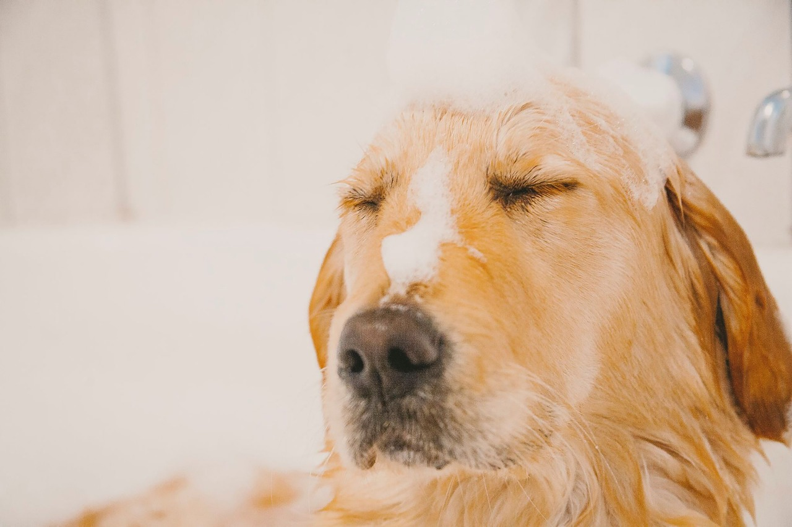

Top Dog Spa and Boutique
32 Saugus Ave
Saugus, MA
BTS: What To Expect At Your Pup's First Visit
Welcome to our clinic!
As you arrive at Top Dog, you will notice the lively environment filled with smiling faces and comfortable pups! Check in at the front desk, where we will take your first and last name, confirm your phone number, your pup's name, as well as your appointment time and service you are booked for. In the case that there is a slight wait for your pup's appointment, you can relax in the waiting room or set your pup free in the open play area with their furry friends!
One of our amazing team members will come to welcome your pup in and start their service, whether it be in our clinic, boutique, or both! At this point in time, we restate the estimated length of your pet's appointment, and you may choose whether you will stay in the waiting room with window visibility into the clinic, or to return when we send you an appointment completion text stating your pup is looking like royalty and ready to go! Our team members ensure that each service is completed with love, efficiently.
Following the appointment, you may choose to book your pet their next session, or simply just complete payment and checkout. Every appointment is tailored to both you and your pup's needs!
Pet of the Week
Lucky came in this past Saturday for a full service and left the most relaxed pup in the world!